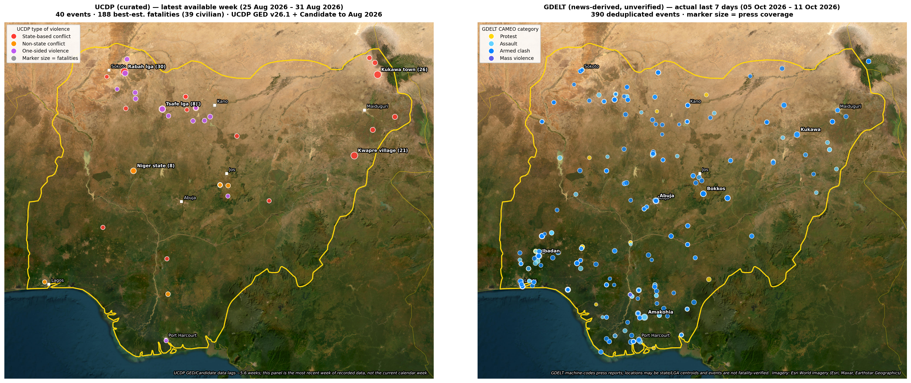

RBM GLOBAL · OPEN-SOURCE SECURITY AND HUMANITARIAN OVERVIEW
Nigeria — Weekly Threat Brief
Reporting window: 5-11 October 2026. Issue date: 12 October 2026. Catch-up edition published 13 October 2026. Selected sourced security and humanitarian reporting; not an exhaustive national incident register.
Overview
Reporting this week describes attacks in Borno and Kebbi, the release of abducted travellers in Imo, and political violence in Enugu. The Imo release accounts differ over ransom, and military casualty figures remain attributed or incomplete. These selected reports do not support a national weekly casualty total or a like-for-like trend estimate.
Reviewed developments
Borno: military losses reported after 6 October attack
An Associated Press report carried by Arab News on 8 October describes an attack in Kukawa on Tuesday, 6 October. The military acknowledged soldier deaths without giving a total and claimed more than 25 attackers killed. An unnamed senior officer told AP that 10 soldiers died. The anonymous figure is not treated here as a confirmed toll; neither side's losses have been independently verified in this review. [1]
Kebbi: attributed account of 7 October attack
Channels reported on 8 October that military authorities said an attack in Maiyama on 7 October had been repelled. The report attributes the account and recovery claims to Operation FANSAN YAMMA. It does not establish a verified casualty count or demonstrate a wider improvement in civilian safety. [2]
Imo: release reported; ransom accounts conflict
Channels reported on 8 October that 20 prospective corps members and one other person were released on 7 October after the 1 October abduction. The police commissioner said he was unaware of any ransom payment. A separate Channels roundup reported a mother's claim that her family paid N6 million. The release is a new development; how it was secured remains disputed. Earlier rescue and passenger counts are not added to these figures because their overlap is unclear. [3,4]
Enugu: political violence and disputed casualty claims
A Premium Times/NAN report published on 11 October records the state government's account of incidents at the airport and NDC secretariat on Saturday, 10 October. The government said a man suffered a gunshot wound and disputed claims of a death. Its account of responsibility is not independently established here. The report says police were investigating; this brief does not resolve the contested accounts or adopt a final casualty total. [5]
Coverage and confidence
| Zone | Coverage in this edition |
|---|---|
| North East | Borno attack reporting; Adamawa water-access programme |
| North West | Kebbi military statement; selected reporting only |
| South East | Imo release and disputed ransom accounts; Enugu violence |
| South West | Oyo travellers affected by the Imo abduction |
| North Central | No comprehensive event review; no inference of quiet |
| South South | No comprehensive event review; no inference of quiet |
Map and data status

Live data checked on 13 October
The interactive map contains 2,144 UCDP events dated 1 October 2024 - 31 August 2026 and 2,659 collapsed GDELT records dated 24 August - 12 October 2026. Every required GDELT daily input through 12 October was ingested, with no missing days; its maximum event date is also 12 October. The updater returned GED 26.1 and Candidate releases through August (26.0.8); no newer Candidate month was returned.
Retained figure and its two source windows
This dated image was rendered on Monday, 12 October and retained for the week ending 11 October. Its GDELT panel covers 5-11 October: 390 machine-coded records, matching this brief's reporting window. The UCDP panel covers 25-31 August: 40 events and 188 best-estimate fatalities, including 39 civilian fatalities. The UCDP panel is historical context, not this week's violence. The daily live map has since advanced through 12 October.
Interpretation
GDELT measures machine-coded reporting and can repeat or misclassify incidents and locations. Article weights are not casualties or measured opinion. UCDP is curated, delayed and revisable. Do not add the panels or compare their counts as a trend.
Humanitarian context
A UN Women story published on 6 October describes a rehabilitated solar-powered borehole in Bare, Adamawa, and its intended benefits for women's access to water, livelihoods and safety. The source estimates 10,000 residents served. This is a programme estimate, not a new displacement total or a measured weekly reduction in violence. The exact completion date is not given, so the intervention is treated as context reported during the week. [6]
Limitations
This is a selective open-source review, not field verification or complete coverage of all 36 states and FCT. Articles repeating one statement are not independent corroboration. Casualty categories and disputed figures are not combined. No report for an area is not evidence of no incidents. State sentiment assessments remain dated 27 September; the separately published Yiaga national evidence was added on 12 October and does not refresh state ratings or the historical unverified X sample.
Sources
- Associated Press via Arab News; published 8 October; event 6 October: Kukawa attack: official and anonymous casualty accounts
- Channels Television; published 8 October; event 7 October: Military statement on Maiyama attack
- Channels Television; published 8 October; release 7 October, abduction 1 October: Police commissioner on release and ransom
- Channels Television; published 8 October; mother's account of release: Conflicting accounts of how release was secured
- Premium Times / NAN; published 11 October; events 10 October: Enugu government's account and denial of death claim
- UN Women / UN Nigeria; published 6 October; completion date unspecified: Supporting women's resilience through access to water